Realizacje
Galeria
Wiaty, zadaszenia i ogrodzenia ze stali - przykłady konstrukcji, jakie robimy pod wymiar posesji.
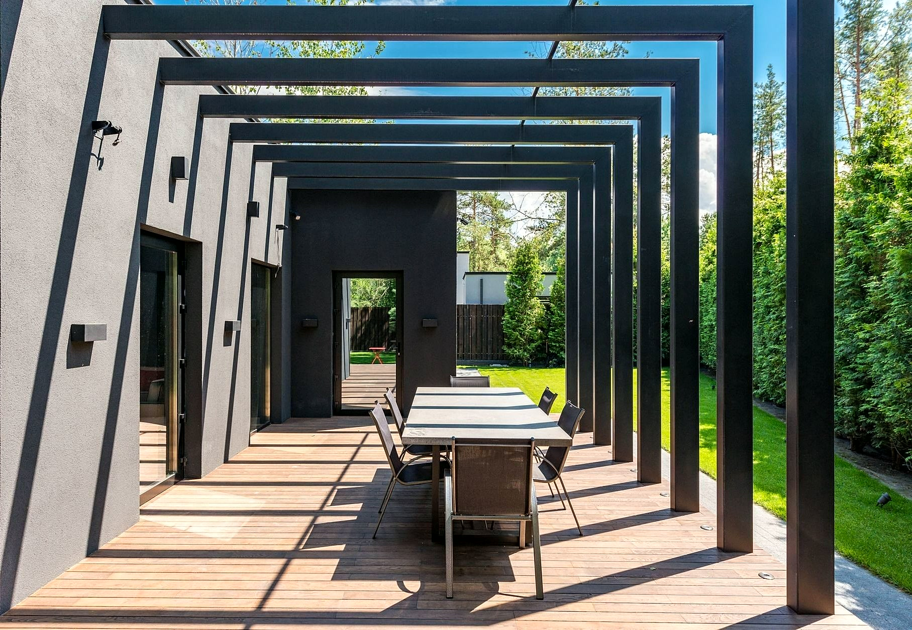
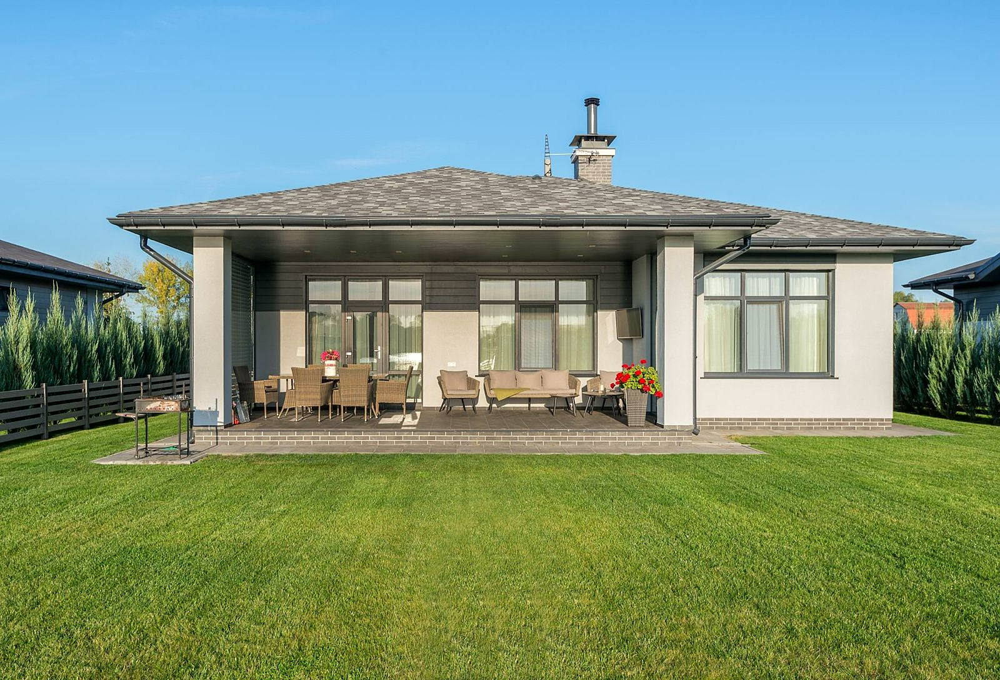
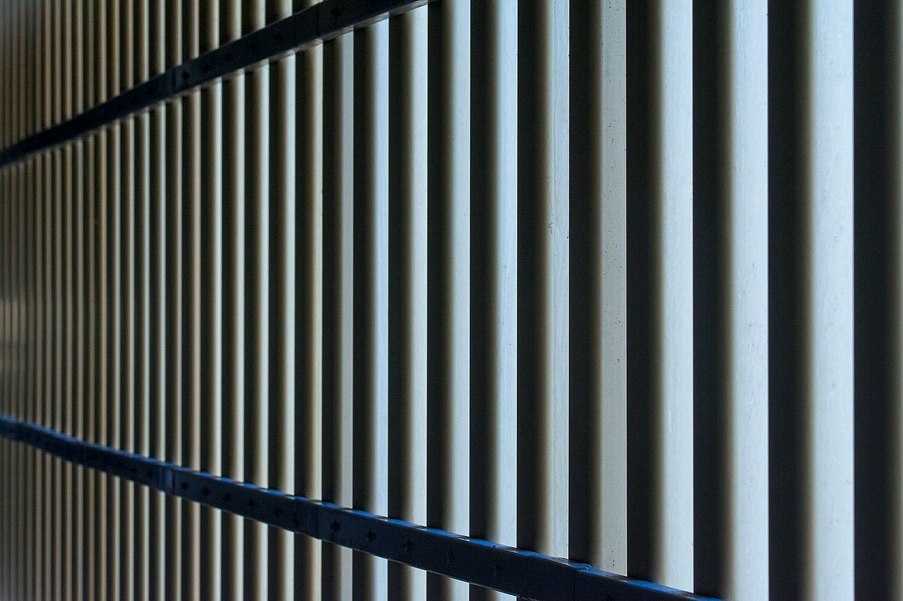
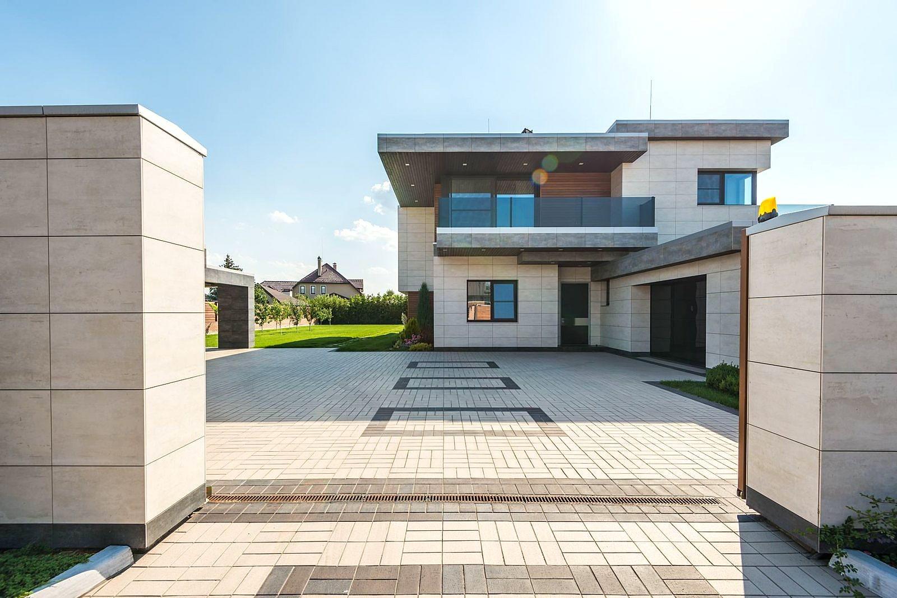
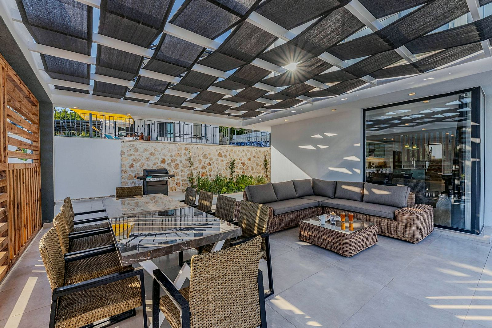

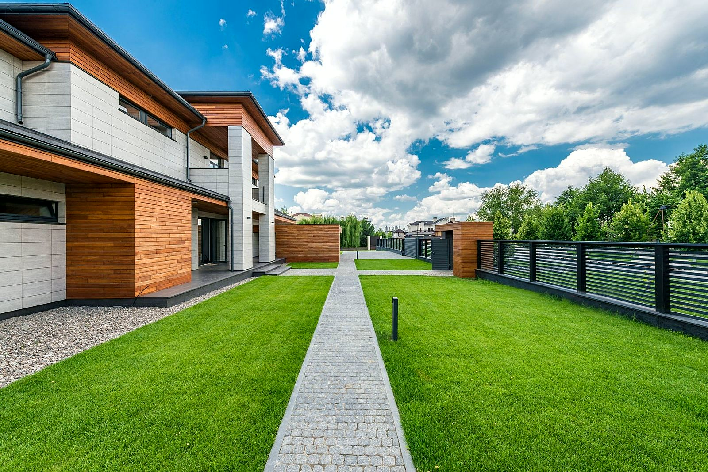
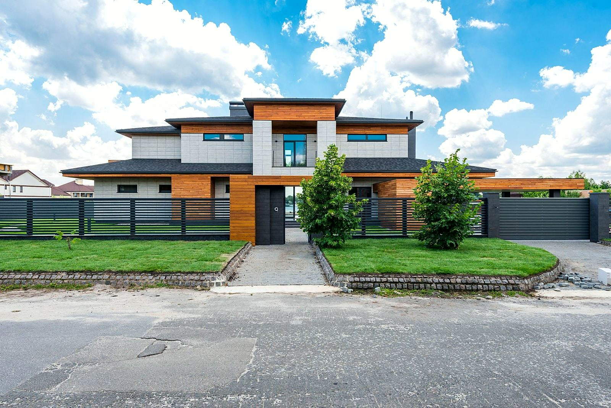
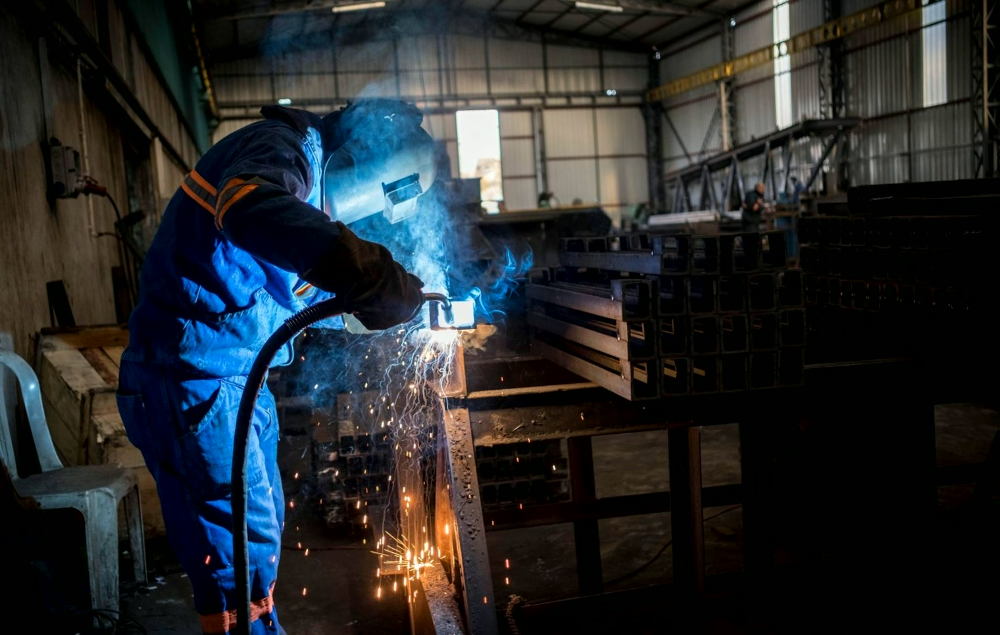
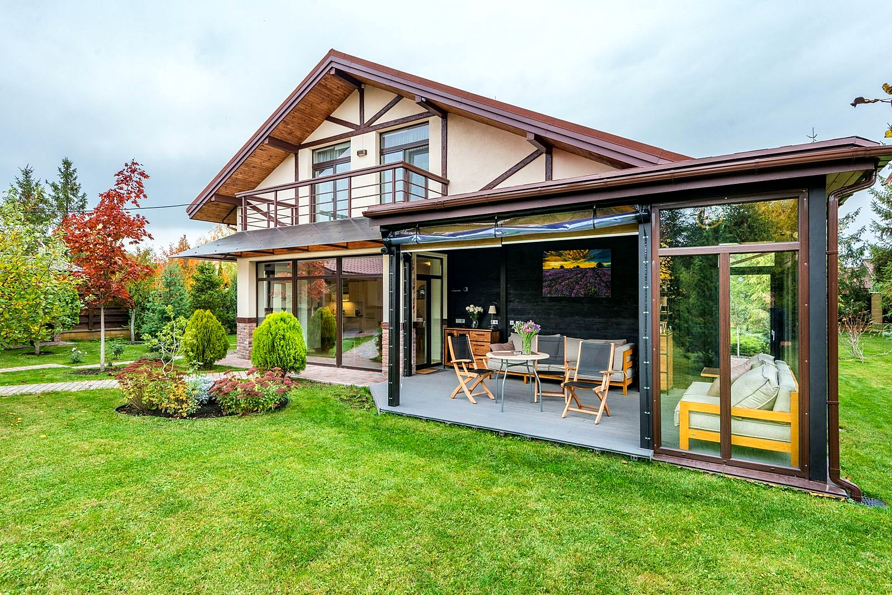
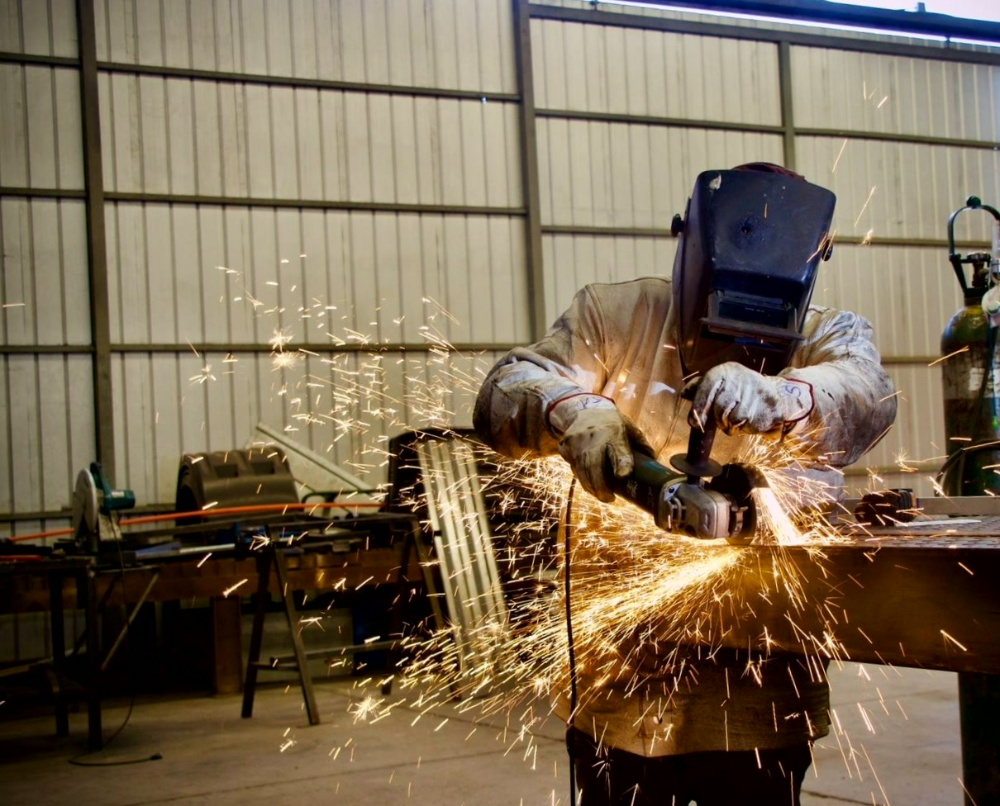
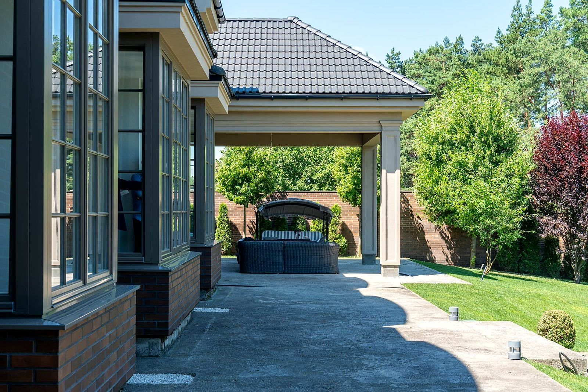
Przykładowe aranżacje. Zdjęcia montaży u naszych klientów i warianty kolorów pokażemy przy wycenie.